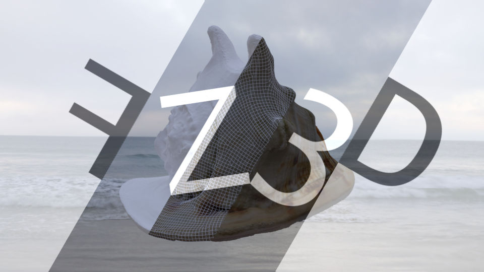

Bemutatkozás
Köszöntelek weboldalamon!
Fáth Zoltán vagyok, amatőr 2D/3D-grafikus, animációkészítő. 2005 óta foglalkozom 3D grafikával heti-havi rendszerességgel, teljesen autodidakta módon kezdtem el tanulni az alapokat. Mindig is műszaki beállítottságú voltam, de ugyanilyen erősen jelen van az életemben az önkifejezés, a művészet szeretete is. Az informatika széles és változatos eszköztára szerencsére mindkét oldal bemutatására lehetőséget kínál.
A Blender szoftvert választottam (pontosabban annak idején egy jó barátom ajánlotta), mert ingyen hozzáférhető, és miután elkezdtem használni, azonnal megtetszett a mögötte álló lelkes közösség, akik különféle technikai tippekkel, trükkökkel, magas szintű, önzetlen tudás-transzferrel fáradhatatlanul segítik és inspirálják felhasználók millióit, kezdőktől a profikig világszerte. Az elmúlt 16 év alatt látványos fejlődésen ment keresztül a program, szinte rá sem lehet már ismerni, honnan is indult. Ma már nem is érzem szükségét, hogy más szoftverre váltsak. Kicsit irigylem is azokat, akik most kezdik el, hiszen a számtalan Blender-kiegészítővel (addon-nal) a program alapfunkciói "felokosíthatók" olyan szintre, hogy gyakorlatilag túlzás nélkül állíthatom: versenyképes otthoni mini alkotóstúdiót varázsol egy erősebb számítógépből. És ehhez jönnek hozzá azok a külső, szintén open-source szoftverek, amik nagyon jól használhatók és remekül integrálhatók különböző munkafolyamatokba, tovább bővítve az amúgy is korlátlannak tűnő lehetőségeket (hogy csak néhányat említsek: GIMP, Inkscape, Unreal Engine, MeshRoom, Adobe Mixamo, Mandelbulber, Tree It, MakeHuman, JSplacement, InstantMeshes...)
Ezidáig több ezer (ha nem tízezer!) órát töltöttem a programmal, rengeteget kísérleteztem, fejlődtem, és talán az itt bemutatott munkáimon is látszik, hogy szinte minden részterületébe belekóstoltam a 3D-nek, mondhatni megismertem azt a szövevényes eszköztárat, ami immáron alkalmassá tesz arra, hogy egy adott probléma megoldásához megfelelő és hatékony módszereket válasszak. Ez alsó hangon is több évnyi tanulást igényel, és a főállásom mellett (informatika tanár vagyok) rengeteg energiát és türelmet igényelt, hogy eljussak arra a szintre, ahol jelenleg tartok. Tulajdonképpen ezt a weboldalt egy bemutatkozó oldalnak szánom, amit szintén magam raktam össze a nulláról, kód szinten. Sokat gondolkodtam rajta, hogy kell-e nekem egyáltalán saját weboldal, felnőttem-e kellőképpen a feladathoz, aztán arra jutottam, hogy egyrészt nem az én feladatom ezt eldönteni, másrészt valahol el kell kezdeni, bele kell vágni, meg kell mutatni! Azt pedig a Kedves műértő (vagy nem műértő, de kíváncsi) Látogatóra bízom, hogy megérte-e, vagy sem!